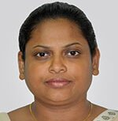

Faculty of Technology
University of Ruhuna
Faculty of Technology
University of Ruhuna
Dr. (Mrs.) K.M.W Rajawatta

Department of Biosystems Technology
Senior Lecturer Grade II
wathsala@btec.ruh.ac.lk
94-41-3006134


ACADEMIC AND PROFESSIONAL QUALIFICATIONS
PhD (Agricultural Engineering)(Northwest A&F University, China), 2015
M.Sc (Computer Science)(Kelaniya,SL),2008
B.Sc Class II (Upper) Hons,(Agriculture)(Ruhuna,SL),2001
Senior Lecturer: Department of Biosystems Technology, Faculty of Technology, University of Ruhuna, Matara, Sri Lanka (January/2018 to date )
Principal Research Scientist:Department of Agricultural Engineering and Post-harvest Technology, National Engineering Research and Development Centre of Sri Lanka (NERDC), Ekala, Ja-ela, Sri Lanka(Sep/2017 to Jan/2018)
Senior Research Scientist:Department of Agricultural Engineering and Post-harvest Technology, National Engineering Research and Development Centre of Sri Lanka (NERDC), Ekala, Ja-ela, Sri Lanka(Apr/2016 to Sep/2017)
PhD candidate:College of Mechanical and Electronic Engineering, Northwest A&F University, China(Sep/2011 to Jun/2015)
Scientific Assistant (Gr. I) to the Dean: Faculty of Agriculture, University of Ruhuna, Sri Lanka(Aug/2008 to Sep/2011 )
Scientific Assistant (Gr. II) to the Dean: Faculty of Agriculture, University of Ruhuna, Sri Lanka(Nov/2005 to Aug/2008 )
Temporary Scientific Assistant to the Dean: Faculty of Agriculture, University of Ruhuna, Sri Lanka(Jan/2005 to Nov/2005)
Demonstrator in Computer Unit, Faculty of Agriculture, University of Ruhuna, Sri Lanka and Acting Scientific Assistant to the Dean, Faculty of Agriculture, University of Ruhuna & Extension (TARE), Faculty of Agriculture, University of Ruhuna, Sri Lanka(Jan/2004 to Jan/2005)
Research assistant: Climate Change Enabling Activity project, Faculty of Agriculture, University of Ruhuna
Demonstrator in Department of Agric. Engineering, Faculty of Agriculture, University of Ruhuna, Sri Lanka(Feb/2002 to Dec/2003)
PUBLICATIONS
A.J.G.S. Dahanayaka, S.A.P.S. Silva, K.M.W. Rajawatta, K.Y.H.D. Shantha and P.A.U.W.K. Paranagampola, 2017. "Evaluation of Modified Plucking Pole for Harvesting Coconuts". Research Symposium -2017, National Engineering Research & Development Center, Sri Lanka
Rajawatta KMW, Dongjian He, Piyaratne MKDK and Haidong Lu, 2017." Performance evaluation of a maize growth simulation model". 4th Ruhuna International Science and Technology Conference (RISTCON 2017)
Rajawatta KMW, Dongjian He, Piyaratne MKDK and Haidong Lu, 2016. MAIZESim: Design and implementation of maize growth simulation model for Northwest region in China. (SCI), ISSN 2038-5625. 2/2016, 25-34
Silva SAPS, Pathiraja PMYS and Rajawatta KMW, 2016. "Design and development of power weeder for lowland paddy fields", NSF research summit 2016. National Science Foundation, Sri Lanka
Rajawatta KMW (2015) "Design and implementation of maize growth simulation model for Northwest region in China". Thesis submitted in partial fulfillment of the requirements of the postgraduate degree of PhD in Agricultural Electrification and Automation (PhD Dissertation)
Rajawatta KMW, Dongjian He and Piyaratne MKDK, 2014. CMWSim: Development and evaluation of probability-based weather generating software for crop growth simulation. Italian journal of Agrometeorology, (SCI), ISSN 2038-5625. 3/2014, 5-14
Rajawatta KMW, Dongjian He and Piyaratne MKDK, 2014. CMWSim: Development and evaluation of probability-based weather generating software for crop growth simulation. ASABE 2014 and CSBE|SCGAB Annual International Meeting. July 13-16, Montreal, Quebec, Canada.
Rajawatta KMW (2008) "Development of Decision Support System for Rainfall Data Analysis". Thesis submitted in partial fulfillment of the requirements of the postgraduate degree of MSc in Computer Science (MSc Dissertation)
Rajawatta KMW, Weerasinghe KDN and Jinendra BMS, 2003. "Optimum Solution Depth for Hydroponically grown Lettuce (Lactuca sativa) in hot areas for static Hydroponics Systems", Proceedings of the 59th SLASS.
Rajawatta KMW, Weerasinghe KDN and Jinendra BMS, 2002. Selection of Optimum Solution Depth for Hydroponically grown Lettuce (Lactuca sativa) in hot areas for static Hydroponics Systems, Proceedings of the 5th Annual Research Seminar of BSc Graduates, Faculty of Agriculture, University of Ruhuna, 2002
Rajawatta KMW (2001) "Selection of Optimum Solution Depth for Hydroponically grown Lettuce (Lactuca sativa) in Hot Areas for Static Hydroponics Systems". Thesis submitted in partial fulfillment of the requirements of the advanced course in Agricultural Engineering for the degree of BSc in Agriculture (BSc Dissertation)
AWARDS & FELLOWSHIPS
Most Outstanding International Student Award College of International Education, Northwest A & F University, China, 2014
Chinese Government Scholarship, China Scholarship Council (CSC) For postgraduate study (2011 to 2015)
MEMBERSHIPS & ACTIVITIES IN PROFESSIONAL BODIES
Jury member : "Sahasak Nimewum "-2018, 2017 & 2016, National Inventor's Commission, Sri Lanka (National level and Provincial Level)
Member of the faculty Board, Faculty of Technology, University of Ruhuna (2018 to date)
Industrial Training Coordinator, Faculty of Technology, University of Ruhuna, Sri Lanka (2018)
Member, TISC (Technology and Innovation Support Centers), NERDC, Sri Lanka (2017)
Member, Editors for publication, Research Syposium-2016, NERDC, Sri Lanka (2016)
Member, American Society of Agricultural and Biological Engineers (ASABE) (2014) (M1047418)
Life Member, Ruhuna Agriculture Faculty ALUMNI Association
Editorial Assistant, International Journal of Tropical Agricultural Research and Extension (TARE) (2004 to 2011)
Published the 'TARE' Tropical Agricultural Research & Extension, an international journal on the Faculty web site as an online journal collaboration with the Sri Lanka journal online and International Network for the Availability of Scientific Publications (2009)
Published the 'TARE' Tropical Agricultural Research & Extension, an international journal as an E-journal on the Faculty web site (http://www.agri.ruh.ac.lk/tare/index.htm)
Coordination Officer, Member of Organizing Committee, Registration Committee First International Symposium of Faculty of Agriculture, University of Ruhuna, Sri Lanka (2010)
Secretary, First and Second National Symposium, Faculty of Agriculture, University of Ruhuna (2008 & 2009)
Committee Member of the Daycare center & Montessori committee of welfare society, Faculty of Agriculture, University of Ruhuna, Sri Lanka (2009)
Convener of the organizing committee - Admission of Diploma Holders to the Agriculture Degree Program, Faculty of Agriculture, University of Ruhuna (2007 -2011)
Life Member, Sri Lanka Association for the Advancement of Science (SLAAS) (8023/B)
Convener, Organizing Committee of Faculty of Agriculture, Fifth Academic Session, University of Ruhuna, Sri Lanka (2008)
Executive Committee member, Ruhuna University Agriculture Faculty Alumni Association, Faculty of Agriculture, University of Ruhuna, Sri Lanka (2007)
Member of Organizing committee - IRQUE project, Faculty of Agriculture, University of Ruhuna, Sri Lanka (2004 to 2005)
Member of Organizing committee -International MSc in Social Water management project, Faculty of Agriculture, University of Ruhuna (2004-2006)
Member of Organizing committee - Annual Research Seminar of BSc graduates Faculty of Agriculture, University of Ruhuna, Sri Lanka (2002-2003)
Member of the faculty Board, Faculty of Agriculture, University of Ruhuna (2010 to 2011)
Member of Computer committee, Faculty of Agriculture, University of Ruhuna (2010 to 2011)
RESEARCH INTERESTS
Crop growth modelling
ICT applications in Agriculture and Biosystems Technology
Hydroponics Culture
Carbon Footprint Calculations